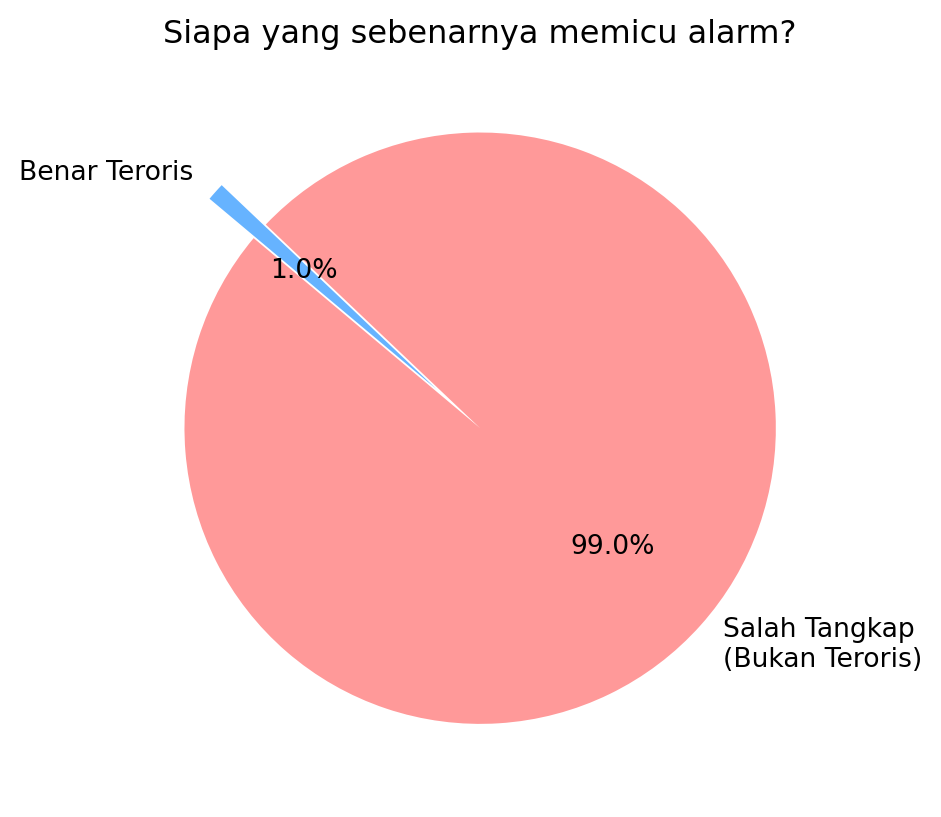

Berikut kode Python (siap pakai) untuk setiap item dalam agenda Minggu 4. Saya buat per bagian supaya Bapak bisa copy–paste ke notebook / .py terpisah.
6.1.1 Pertemuan 1 (Senin, 1 Jam) — The Intuition & The Paradox
00:00–00:10 | The Hook: “Jebakan Tes DNA/Wajah” (Base-Rate Fallacy)
00:00–00:20 | Deep Dive: Monty Hall Paradox (Simulasi)
Versi yang bisa “interaktif ringan” + simulasi banyak trial.
import numpy as npdef monty_hall_trial(switch=True, rng=None):if rng isNone: rng = np.random.default_rng() doors = np.array([0, 1, 2]) prize = rng.integers(0, 3) # lokasi mobil choice = rng.integers(0, 3) # pilihan awal# Host buka pintu yang bukan pilihan & bukan prize candidates = doors[(doors != choice) & (doors != prize)] opened = rng.choice(candidates)if switch:# pindah ke pintu yang tersisa remaining = doors[(doors != choice) & (doors != opened)] choice = remaining[0] win = (choice == prize)return windef simulate_monty_hall(n=100_000, switch=True, seed=123): rng = np.random.default_rng(seed) wins =0for _ inrange(n): wins += monty_hall_trial(switch=switch, rng=rng)return wins / np_stay = simulate_monty_hall(n=200_000, switch=False)p_switch = simulate_monty_hall(n=200_000, switch=True)print("Win rate STAY :", p_stay)print("Win rate SWITCH:", p_switch)
00:20–01:10 | Pod Challenge: “The Spam Assassin”
A) Hitung manual dengan Bayes (langsung di Python biar konsisten)
Skenario:
Prior spam = 20%
P(“gratis”|spam) = 90%
P(“gratis”|normal) = 5%
def posterior_spam_given_word(prior_spam, p_word_given_spam, p_word_given_ham): num = p_word_given_spam * prior_spam den = num + p_word_given_ham * (1- prior_spam)return num / denprior =0.20p_w_spam =0.90p_w_ham =0.05post = posterior_spam_given_word(prior, p_w_spam, p_w_ham)print(f"P(Spam | 'Gratis') = {post:.6f} = {post*100:.2f}%")
B) Fungsi is_spam(word, prior, sensitivity, specificity)
Saya buat versi yang “jelas”:
sensitivity = P(word muncul | spam)
specificity = P(word tidak muncul | ham) Sehingga P(word muncul | ham) = 1 - specificity.
def is_spam(word_present, prior_spam, sensitivity, specificity):""" word_present: True jika kata muncul. sensitivity: P(word present | spam) specificity: P(word absent | ham) """ p_spam = prior_spam p_ham =1- p_spam p_word_given_spam = sensitivity p_word_given_ham =1- specificityif word_present: num = p_word_given_spam * p_spam den = num + p_word_given_ham * p_hamreturn num / denelse:# P(spam | word absent) p_notword_given_spam =1- p_word_given_spam p_notword_given_ham = specificity num = p_notword_given_spam * p_spam den = num + p_notword_given_ham * p_hamreturn num / den# Demo sesuai skenario:prior =0.20sensitivity =0.90specificity =0.95# karena P(word|ham)=0.05 => P(not word|ham)=0.95print("Jika kata 'Gratis' muncul:", is_spam(True, prior, sensitivity, specificity))print("Jika kata 'Gratis' TIDAK muncul:", is_spam(False, prior, sensitivity, specificity))
C) Eksperimen: prior turun jadi 1% (imbalance)
for prior in [0.20, 0.05, 0.01]: post = is_spam(True, prior, sensitivity=0.90, specificity=0.95)print(f"Prior spam={prior:.2%} => P(spam|'Gratis')={post:.2%}")
D) (Bonus) Simulasi confusion matrix untuk lihat False Positive “di dunia nyata”
import numpy as npdef simulate_spam_filter( N=50_000, prior_spam=0.20, sensitivity=0.90, # P(word|spam) specificity=0.95, # P(not word|ham) seed=0): rng = np.random.default_rng(seed)# label email: 1 spam, 0 ham y = (rng.random(N) < prior_spam).astype(int)# word_present berdasarkan kelas word = np.zeros(N, dtype=int) spam_mask = y ==1 ham_mask = y ==0 word[spam_mask] = (rng.random(np.sum(spam_mask)) < sensitivity).astype(int) word[ham_mask] = (rng.random(np.sum(ham_mask)) < (1- specificity)).astype(int) # P(word|ham)# Prediksi: jika word_present => spam yhat = word.copy() TP =int(((y==1) & (yhat==1)).sum()) FP =int(((y==0) & (yhat==1)).sum()) TN =int(((y==0) & (yhat==0)).sum()) FN =int(((y==1) & (yhat==0)).sum()) precision = TP/(TP+FP) if (TP+FP) else0.0 recall = TP/(TP+FN) if (TP+FN) else0.0return {"TP":TP,"FP":FP,"TN":TN,"FN":FN,"precision":precision,"recall":recall}for prior in [0.20, 0.01]: cm = simulate_spam_filter(N=100_000, prior_spam=prior, sensitivity=0.90, specificity=0.95, seed=1)print(f"\nPrior={prior:.2%}")print(cm)
01:10–01:40 | Studi Kasus: Deteksi Intrusi & Anomali (Gabungkan sinyal independen)
Inti teknik: pakai likelihood ratio dari beberapa sinyal (diasumsikan independen).
def posterior_with_independent_signals(prior_H, signals):""" prior_H: P(H) mis. intrusi signals: list of tuples (p_e_given_H, p_e_given_notH) untuk setiap evidence E_i Dengan asumsi evidence independen bersyarat pada H / ~H: P(E1..Ek | H) = Π P(Ei|H) P(E1..Ek | ~H) = Π P(Ei|~H) """ pH = prior_H pNot =1- pH pE_given_H =1.0 pE_given_Not =1.0for p1, p0 in signals: pE_given_H *= p1 pE_given_Not *= p0 num = pE_given_H * pH den = num + pE_given_Not * pNotreturn num / den# Contoh: dua sinyal: IP mencurigakan + login jam 03:00prior_intrusion =1/10_000# Misal:# P(IP suspicious | intrusi)=0.80, P(IP suspicious | normal)=0.02# P(login 03:00 | intrusi)=0.60, P(login 03:00 | normal)=0.05signals = [(0.80, 0.02), (0.60, 0.05)]post2 = posterior_with_independent_signals(prior_intrusion, signals)print(f"Posterior intrusi setelah 2 sinyal = {post2:.6f} = {post2*100:.4f}%")
Kalau mau “wow effect”: tambahkan sinyal ke-3 (device baru, geo anomaly, dll) dan lihat posterior naik.
01:40–01:50 | Code Review & Debat: “Kapan kita boleh mengabaikan Prior?”
Buat script kecil untuk “membuktikan” prior sulit diabaikan: ubah prior, lihat posterior.
def sweep_prior(priors, p_e_given_H, p_e_given_notH): out = []for pr in priors: post = bayes_update(pr, p_e_given_H, p_e_given_notH) out.append((pr, post))return outpriors = [0.5, 0.1, 0.01, 0.001, 0.0001]pairs = sweep_prior(priors, p_e_given_H=0.99, p_e_given_notH=0.01)for pr, post in pairs:print(f"Prior={pr:.5f} => Posterior={post:.5f}")
Kalau Bapak ingin “exit ticket” yang dikumpulkan cepat (mis. via input), ini contoh auto-check keyword-based (naif tapi praktis).
def grade_exit_ticket(answer: str):""" Penilaian sederhana berbasis keyword. Kunci konsep: - false positive: alarm/sistem bilang ada bahaya padahal tidak ada - bahaya: memicu tindakan salah, rugi, panik, memadamkan, mengganggu operasi, dll """ a = answer.lower() must_have = ["false positive", "alarm", "padahal", "tidak"] danger_words = ["bahaya", "rugi", "panik", "salah", "memadamkan", "ganggu", "shutdown"] score =0for k in must_have:if k in a: score +=1ifany(w in a for w in danger_words): score +=2# Skor maksimum 6return score, 6# Contoh pemakaian:jawaban ="""False positive itu ketika alarm kebakaran menyatakan ada api padahal tidak ada.Ini berbahaya karena bisa memadamkan sistem otomatis secara salah dan mengganggu operasi serta menimbulkan kerugian."""score, max_score = grade_exit_ticket(jawaban)print(f"Score: {score}/{max_score}")
Kalau Bapak mau, saya bisa rapikan semua ini jadi satu file repo “week04/” (mis. w4_demo.ipynb, w4_spam_lab.py, w4_monty_hall.py) lengkap dengan README.md dan instruksi tugas GitHub Classroom—tapi untuk saat ini, semua item agendanya sudah punya kode masing-masing.
The Hook: “Jebakan Tes DNA/Wajah”
Aktivitas: Tampilkan skenario FaceID/Biometrik. “Jika sistem keamanan punya akurasi 99%, dan alarm berbunyi mendeteksi teroris, berapa persen kemungkinan orang itu benar-benar teroris?” Tebakan Mahasiswa: Kebanyakan akan menjawab 99%. Realita: Tunjukkan bahwa jika teroris sangat langka (misal 1 dari 10.000), peluangnya mungkin di bawah 1%. Ini adalah Base-Rate Fallacy.
Anda memiliki detektor teroris melalui foto dengan akurasi 99%. Kalau anda mendeteksi seseorang positif teroris berapa yakin anda boahwa ia seorang teroris?
Ini soal mengkuantisasi keyakinan. Kita modelkan dengan konsep peerobabilitas.
Ruang Sample dibangkikan dua random sources: * Subset A para teroris: Dari setiap 100 orang yang ada dalam populasi, terdapat 1 orang teroris, yang kita tidak tahu siapa. * Subset B positif teroris: Dari deteksi foto dari orang yang lewat, terdapt orang yang di nyatakan positif teroris atau negatif teroris dengan tingkat akurasi 99%
Logika: kalau total populasi ada 10000 orang, jumlah teroris 10 orang. kalau 10000 orang ini di foto, maaka dari 10 teroris ini yang terdeteksi 99% x 10 teroris alias 10 teroris terdeteksi semua. tapi 9990 bukan teroris dan akurasinya 99%, bearti 1% dari 9990 non teroris yaitu 100 orang akan dinyatakan positif.
Total yang terdeteksi teroris jadi 10 teroris true positive ditambah 100 nonteroris yangterciduk false-positive dengan total 110 orang. seberapa yakin anda sekarang bila anda tahu dari 110 yang anda tangkap padahal jumlah teroris hanya 10.
Apalagi bila anda tahu dari 10000 penduduk, hanya 1 orang teroris, sebagaimana dalam simulasi berikut ini. Artnya bila populasi ada 100000, cuma ada 10 teroris
import numpy as npteroris_rate =1/10000N =100000# Populasinik = np.arange(N)status=["teroris","biasa"]prevalensi=[teroris_rate,1-teroris_rate]nik_teroris = np.random.choice(status,size=N,p=prevalensi)# print(teroris_rate, 1-teroris_rate, nik_teroris)hitung_teroris =list(nik_teroris).count("teroris")hitung_biasa =list(nik_teroris).count("biasa")print("teroris dan biasa:",hitung_teroris, hitung_biasa)# Deteksiakurasi =99/100false_positive =0false_negative =0true_positive =0true_negative =0for i in nik: rand = np.random.random()
teroris dan biasa: 9 99991
Proses Melalui Eternal Functions
import matplotlib.pyplot as pltdef simulasi_base_rate_fallacy():# 1. Parameter Input populasi_total =10000 prevalensi_teroris =1/10000# 1 teroris dari 10.000 orang akurasi_sistem =0.99# 99%# 2. Perhitungan Logika# Jumlah teroris dan orang biasa dalam populasi jumlah_teroris = populasi_total * prevalensi_teroris jumlah_orang_biasa = populasi_total - jumlah_teroris# Kasus A: Alarm bunyi karena BENAR teroris (True Positive)# Sistem mendeteksi 99% dari 1 teroris yang ada alarm_benar = jumlah_teroris * akurasi_sistem# Kasus B: Alarm bunyi padahal orang biasa (False Positive)# Sistem salah mendeteksi 1% dari 9.999 orang biasa alarm_salah = jumlah_orang_biasa * (1- akurasi_sistem)# Total alarm yang berbunyi total_alarm_bunyi = alarm_benar + alarm_salah# 3. Hasil Akhir (Peluang Aktual) prob_aktual = (alarm_benar / total_alarm_bunyi) *100# 4. Tampilkan Hasil Ke Konsolprint("=== SIMULASI BASE-RATE FALLACY ===")print(f"Total Populasi : {populasi_total} orang")print(f"Jumlah Teroris Nyata : {int(jumlah_teroris)} orang")print(f"Akurasi Sistem : {akurasi_sistem*100}%")print("-"*35)print(f"Alarm Berbunyi Benar : {alarm_benar:.2f} kali")print(f"Alarm Berbunyi Salah : {alarm_salah:.2f} kali (False Positive)")print(f"Total Alarm Berbunyi : {total_alarm_bunyi:.2f} kali")print("-"*35)print(f"TEBAKAN UMUM : 99%")print(f"REALITA (Probabilitas): {prob_aktual:.2f}%")print("-"*35)# 5. Visualisasi labels = ['Salah Tangkap\n(Bukan Teroris)', 'Benar Teroris'] sizes = [alarm_salah, alarm_benar] colors = ['#ff9999', '#66b3ff'] plt.figure(figsize=(7, 5)) plt.pie(sizes, labels=labels, autopct='%1.1f%%', startangle=140, colors=colors, explode=(0, 0.2)) plt.title('Siapa yang sebenarnya memicu alarm?') plt.show()if__name__=="__main__": simulasi_base_rate_fallacy()
=== SIMULASI BASE-RATE FALLACY ===
Total Populasi : 10000 orang
Jumlah Teroris Nyata : 1 orang
Akurasi Sistem : 99.0%
-----------------------------------
Alarm Berbunyi Benar : 0.99 kali
Alarm Berbunyi Salah : 99.99 kali (False Positive)
Total Alarm Berbunyi : 100.98 kali
-----------------------------------
TEBAKAN UMUM : 99%
REALITA (Probabilitas): 0.98%
-----------------------------------

Secara umum: Kita berbicara tentang dua subset A, B, komplemennya dan dan irisanya
Spam filter
Sebuah filter spam mengetahui bahwa 20% email adalah spam. 90% spam mengandung kata “Promo”, sementara hanya 5% email normal mengandung kata tersebut. Jika sebuah email mengandung kata “Promo”, hitung probabilitas itu adalah spam.
Solusi: A : Spam B : Promo
Filter: B
Untuk menghitung probabilitas ini, kita menggunakan Teorema Bayes. Masalah ini adalah contoh klasik dari bagaimana informasi baru (munculnya kata “Promo”) memperbarui keyakinan awal kita (prior) tentang sebuah email.
1. Identifikasi Data
Pertama, kita definisikan variabel-variabelnya:
\(P(S)\): Probabilitas awal email adalah Spam = \(0,20\)
\(P(N)\): Probabilitas awal email adalah Normal = \(0,80\)
\(P(P|S)\): Probabilitas ada kata “Promo” jika email itu Spam (Sensitivity) = \(0,90\)
\(P(P|N)\): Probabilitas ada kata “Promo” jika email itu Normal (False Positive Rate) = \(0,05\)
2. Rumus & Perhitungan
Kita ingin mencari \(P(S|P)\), yaitu probabilitas email adalah Spam dengan syarat di dalamnya terdapat kata “Promo”.
\[P(S|P) = \frac{P(P|S) \times P(S)}{P(P)}\]
Di mana \(P(P)\) adalah probabilitas total munculnya kata “Promo” baik di email spam maupun normal:
Naive Bayes Classifier adalah algoritma pembelajaran mesin (machine learning) yang digunakan untuk klasifikasi, berdasarkan Teorema Bayes.
Disebut “Naive” (lugu/polos) karena algoritma ini membuat asumsi yang sangat kuat bahwa setiap fitur (variabel) dalam data bersifat independen satu sama lain. Artinya, keberadaan satu fitur dianggap tidak ada hubungannya dengan keberadaan fitur lainnya.
Konsep Dasar: Teorema Bayes
Secara matematis, Naive Bayes bekerja dengan menghitung peluang suatu kelas berdasarkan sekumpulan fitur yang ada. Rumus dasarnya adalah:
\[P(A|B) = \frac{P(B|A) \cdot P(A)}{P(B)}\]
\(P(A|B)\): Peluang kejadian A terjadi setelah B terjadi (Posterior).
\(P(B|A)\): Peluang kejadian B terjadi jika A benar (Likelihood).
\(P(A)\): Peluang awal kejadian A (Prior).
\(P(B)\): Peluang awal kejadian B (Evidence).
Naive Bayes Classfier in Peer-to-Peer Lending
Dalam konteks Peer-to-Peer (P2P) Lending, Naive Bayes Classifier sering digunakan sebagai model awal (baseline) untuk menentukan apakah seorang calon peminjam (borrower) berisiko gagal bayar (Default) atau tidak (Success).
Berikut adalah simulasi kasus sederhana menggunakan data profil peminjam.
1. Skenario Data Peminjam
Misalkan kita memiliki data historis dengan fitur-fitur berikut:
Penghasilan: Tinggi, Sedang, Rendah.
Status Rumah: Milik Sendiri, Sewa.
Riwayat Kredit: Lancar, Macet.
Dalam kasus Credit Scoring, kita akan menghitung:
Prior Probability: Peluang awal seseorang “Lancar” atau “Gagal” bayar.
Likelihood: Peluang munculnya fitur tertentu (misal: Penghasilan Rendah) jika diketahui orang tersebut “Gagal”.
Kode Python: Naive Bayes Manual (Tanpa Sklearn)
import pandas as pd# 1. Data Historis P2P Lendingdata = {'Penghasilan': ['Tinggi', 'Rendah', 'Sedang', 'Rendah', 'Tinggi', 'Sedang', 'Rendah'],'Status_Rumah': ['Milik', 'Sewa', 'Sewa', 'Sewa', 'Milik', 'Milik', 'Sewa'],'Target': ['Lancar', 'Gagal', 'Lancar', 'Gagal', 'Lancar', 'Lancar', 'Gagal']}df = pd.DataFrame(data)def hitung_naive_bayes(data_baru):# --- STEP 1: Hitung Prior P(Lancar) dan P(Gagal) --- total_data =len(df) p_lancar =len(df[df['Target'] =='Lancar']) / total_data p_gagal =len(df[df['Target'] =='Gagal']) / total_dataprint(p_lancar,p_gagal)# --- STEP 2: Hitung Likelihood untuk setiap Fitur ---# Kita akan menghitung P(Fitur | Lancar) dan P(Fitur | Gagal) prob_lancar = p_lancar prob_gagal = p_gagalfor kolom, nilai in data_baru.items():# Likelihood untuk Lancar count_fitur_lancar =len(df[(df[kolom] == nilai) & (df['Target'] =='Lancar')]) likelihood_lancar = count_fitur_lancar /len(df[df['Target'] =='Lancar'])print(kolom, nilai,count_fitur_lancar, likelihood_lancar, len(df[df['Target'] =='Lancar'])) prob_lancar *= likelihood_lancar# Likelihood untuk Gagal count_fitur_gagal =len(df[(df[kolom] == nilai) & (df['Target'] =='Gagal')]) likelihood_gagal = count_fitur_gagal /len(df[df['Target'] =='Gagal'])print(kolom, nilai,count_fitur_gagal,likelihood_gagal, len(df[df['Target'] =='Gagal'])) prob_gagal *= likelihood_gagal# --- STEP 3: Normalisasi (Agar total probabilitas = 100%) --- total_prob = prob_lancar + prob_gagal hasil_lancar = (prob_lancar / total_prob) *100 hasil_gagal = (prob_gagal / total_prob) *100return hasil_lancar, hasil_gagal# --- UJI COBA ---# Peminjam baru: Penghasilan Rendah, Status Rumah Sewacalon_peminjam = {'Penghasilan': 'Rendah', 'Status_Rumah': 'Sewa'}lancar, gagal = hitung_naive_bayes(calon_peminjam)print(f"Hasil Analisis Risiko:")print(f"- Peluang Lancar: {lancar:.2f}%")print(f"- Peluang Gagal : {gagal:.2f}%")print(f"Keputusan: {'DITERIMA'if lancar > gagal else'DITOLAK'}")
0.5714285714285714 0.42857142857142855
Penghasilan Rendah 0 0.0 4
Penghasilan Rendah 3 1.0 3
Status_Rumah Sewa 1 0.25 4
Status_Rumah Sewa 3 1.0 3
Hasil Analisis Risiko:
- Peluang Lancar: 0.00%
- Peluang Gagal : 100.00%
Keputusan: DITOLAK
Penjelasan Logika Matematikanya
Ketika Anda menjalankan kode di atas, inilah yang dilakukan sistem secara manual:
Mencari “Prior”: Sistem melihat dari 7 data, berapa yang “Lancar” (4/7) dan “Gagal” (3/7).
Mencari “Likelihood”: * Dari semua orang yang Gagal, berapa yang Penghasilannya Rendah? (Sangat sering).
Dari semua orang yang Lancar, berapa yang Rumahnya Sewa? (Jarang).
Perkalian Berantai: Sesuai rumus Naive Bayes, semua peluang tersebut dikalikan.
Jika hasil perkalian untuk kategori “Gagal” lebih besar, maka sistem akan menolak pinjaman tersebut.
Keuntungan Membuat Sendiri:
Transparansi: Anda bisa melihat persis mengapa seseorang ditolak (misalnya karena nilai Likelihood pada fitur tertentu nol).
Tanpa Dependency: Kode ini sangat ringan karena tidak membutuhkan library besar, cukup Python dasar (atau Pandas untuk mempermudah tabel).
Laplace Smoothing: Jika ada fitur yang belum pernah muncul di data latih (peluang = 0), Anda bisa dengan mudah menambahkan “+1” pada perhitungan (teknik Laplace Smoothing) agar hasil perkalian tidak menjadi nol semua.
Komponen,Tanpa Smoothing,Dengan Laplace Smoothing Pembilang,count,count + 1 Penyebut,total_kategori,total_kategori + jumlah_variasi_fitur Hasil jika data baru,0 (Error/Buntu),Tetap menghasilkan angka kecil (Stabil)
Mengapa algoritma ini disebut “Naive” dalam kasus pinjaman?
Asumsi Independensi: Model menganggap Penghasilan tidak ada hubungannya dengan Status Rumah. Padahal, di dunia nyata, orang berpenghasilan tinggi biasanya lebih cenderung memiliki rumah sendiri.
Kecepatan vs Akurasi: Meskipun asumsinya “polos”, Naive Bayes sangat cepat untuk memproses ribuan pengajuan pinjaman secara real-time di aplikasi P2P Lending.
4. Interpretasi Hasil untuk Keputusan Bisnis
Dalam praktiknya, perusahaan P2P Lending tidak hanya melihat hasil “Lancar” atau “Gagal”, tetapi melihat Probabilitas (Score):
Probabilitas Lancar
Kategori Risiko
Tindakan Sistem
> 80%
Low Risk
Pinjaman langsung disetujui (Auto-approve)
50% - 80%
Medium Risk
Perlu verifikasi manual oleh tim analis
< 50%
High Risk
Pinjaman ditolak secara otomatis
Keuntungan untuk Riset Engineering/Ekonomi:
Model ini sangat berguna jika Anda ingin membangun sistem early warning yang ringan di sisi server. Karena perhitungannya hanya berbasis probabilitas kondisional, ia tidak membebani memori server meskipun volume data peminjam sangat besar.
Simulasi kode Python sederhana untuk menghitung Naive Bayes ini menggunakan library Scikit-Learn
Kita akan menggunakan library scikit-learn, yang merupakan standar industri untuk machine learning di Python.
Berikut adalah simulasi sederhana untuk mengklasifikasikan apakah sebuah pesan adalah “Promo” atau “Pesan Biasa” berdasarkan kata-kata di dalamnya.
Contoh Sederhana: Klasifikasi Email (Spam atau Bukan)
Bayangkan kita ingin menentukan apakah sebuah email adalah Spam atau Bukan Spam berdasarkan kata-kata yang muncul di dalamnya.
1. Data Latihan (Skenario)
Misalkan dari 100 email yang kita miliki:
20 email adalah Spam.
80 email adalah Bukan Spam.
Dalam email Spam, kata “Hadiah” muncul 15 kali.
Dalam email Bukan Spam, kata “Hadiah” hanya muncul 4 kali.
2. Pertanyaan
Jika ada email baru masuk dengan kata “Hadiah”, apakah email tersebut termasuk Spam?
3. Perhitungan Cepat
Algoritma akan membandingkan dua peluang:
Peluang Spam jika ada kata “Hadiah”: Dihitung dari seberapa sering “Hadiah” muncul di kategori Spam dikali dengan total peluang email itu Spam.
Peluang Bukan Spam jika ada kata “Hadiah”: Dihitung dari seberapa sering “Hadiah” muncul di kategori Bukan Spam dikali dengan total peluang email itu Bukan Spam.
4. Keputusan
Meskipun kata “Hadiah” muncul di kedua jenis email, karena frekuensinya jauh lebih tinggi di kategori Spam (\(15/20\) dibandingkan \(4/80\)), Naive Bayes akan menyimpulkan bahwa email tersebut memiliki probabilitas lebih tinggi sebagai Spam.
Mengapa Algoritma Ini Populer?
Sangat Cepat: Karena perhitungannya sederhana (hanya perkalian probabilitas).
Hemat Data: Tetap bekerja dengan baik meskipun jumlah data latihnya sedikit.
Efisien untuk Teks: Sangat sering digunakan untuk analisis sentimen, filter spam, dan kategorisasi berita.
Kode Python: Naive Bayes Sederhana
from sklearn.feature_extraction.text import CountVectorizerfrom sklearn.naive_bayes import MultinomialNB# 1. Data Latih (Kalimat dan Labelnya)# 0 = Pesan Biasa, 1 = Promopesan = ["Halo apa kabar hari ini", "Rapat dosen jam sepuluh pagi", "Dapatkan diskon hadiah pulsa sekarang", "Promo beli satu gratis satu","Jangan lupa kerjakan tugas kuliah"]label = [0, 0, 1, 1, 0] # 2. Mengubah teks menjadi angka (Vektorisasi)# Naive Bayes butuh angka, bukan kata-kata mentahvectorizer = CountVectorizer()X_train = vectorizer.fit_transform(pesan)# 3. Membuat dan Melatih Model (Multinomial Naive Bayes)model = MultinomialNB()model.fit(X_train, label)# 4. Uji Coba dengan Pesan Barupesan_baru = ["Ada hadiah diskon khusus untuk Anda"]X_test = vectorizer.transform(pesan_baru)print(X_test)prediksi = model.predict(X_test)# Output Hasilkategori ="Promo"if prediksi[0] ==1else"Pesan Biasa"print(f"Pesan: '{pesan_baru[0]}'")print(f"Hasil Klasifikasi: {kategori}")
<Compressed Sparse Row sparse matrix of dtype 'int64'
with 2 stored elements and shape (1, 24)>
Coords Values
(0, 3) 1
(0, 6) 1
Pesan: 'Ada hadiah diskon khusus untuk Anda'
Hasil Klasifikasi: Promo
Penjelasan Singkat Alur Kerja:
CountVectorizer: Karena komputer tidak paham kata-kata, kita mengubah kalimat menjadi tabel frekuensi kata (sering disebut Bag of Words).
MultinomialNB: Ini adalah varian Naive Bayes yang paling cocok untuk data teks (menghitung kemunculan kata).
fit: Model mempelajari pola kata mana yang sering muncul di kategori “Promo” dan mana yang di “Pesan Biasa”.
predict: Model menghitung probabilitas berdasarkan kata-kata di pesan_baru (seperti kata “hadiah” dan “diskon”) untuk menentukan kategori akhirnya.
Keuntungan untuk Penelitian/Pengajaran:
Dalam konteks akademik, Naive Bayes sangat berguna sebagai baseline model. Sebelum menggunakan algoritma yang lebih kompleks (seperti Neural Networks), peneliti biasanya menjalankan Naive Bayes terlebih dahulu untuk melihat performa dasarnya karena sangat cepat dan efisien.
Apakah Anda ingin saya membantu membuatkan visualisasi grafik (seperti bar chart) untuk menunjukkan bagaimana probabilitas kata-kata tersebut didistribusikan dalam model ini?
Analisis sentimen adalah penggunaan Naive Bayes untuk menentukan apakah sebuah teks (seperti ulasan produk atau cuitan media sosial) bernada Positif atau Negatif.
Ini sangat populer karena dalam bahasa manusia, kata-kata tertentu seperti “kecewa”, “lambat”, atau “puas” memiliki bobot probabilitas yang sangat kuat terhadap sentimen tertentu.
Kode Python: Analisis Sentimen Ulasan Produk
Berikut adalah simulasi sederhana menggunakan data ulasan fiktif:
import pandas as pdfrom sklearn.feature_extraction.text import CountVectorizerfrom sklearn.naive_bayes import MultinomialNB# 1. Dataset Latih (Review Produk)# 0 = Negatif, 1 = Positifdata_review = {'ulasan': ["Barang bagus sekali, pengiriman cepat","Sangat puas dengan kualitasnya","Pelayanan ramah dan respon kilat","Kecewa, barang rusak saat sampai","Pengiriman lambat sekali, kapok belanja di sini","Kualitas buruk, tidak sesuai foto","Sesuai pesanan dan berfungsi baik" ],'sentimen': [1, 1, 1, 0, 0, 0, 1]}df_review = pd.DataFrame(data_review)# 2. Vektorisasivectorizer = CountVectorizer()X_latih = vectorizer.fit_transform(df_review['ulasan'])# 3. Training Modelmodel_sentimen = MultinomialNB()model_sentimen.fit(X_latih, df_review['sentimen'])# 4. Uji Coba Ulasan Baruulasan_baru = ["Barangnya jelek, saya sangat menyesal beli ini"]X_baru = vectorizer.transform(ulasan_baru)prediksi = model_sentimen.predict(X_baru)# Outputhasil ="Positif"if prediksi[0] ==1else"Negatif"print(f"Ulasan: '{ulasan_baru[0]}'")print(f"Prediksi Sentimen: {hasil}")
Bagaimana Naive Bayes Menilai Sentimen?
Naive Bayes bekerja seperti “Kamus Probabilitas”:
Pemisahan Kata (Tokenization): Model memecah kalimat menjadi: “Barangnya”, “jelek”, “saya”, “sangat”, “menyesal”, “beli”, “ini”.
Pencarian Nilai: Model mencari kata “jelek” dan “menyesal” di dalam memori data latihnya.
Akumulasi Skor: * Kata “jelek” hampir 100% muncul di ulasan berlabel 0 (Negatif).
Meskipun ada kata netral seperti “saya” atau “beli”, keberadaan kata bermuatan negatif yang kuat akan menarik skor probabilitas ke arah Negatif.
Independensi: Naive Bayes tidak peduli urutan kata (itulah sebabnya disebut Naive). Ia hanya peduli bahwa kata “jelek” muncul, terlepas dari apakah itu di awal atau di akhir kalimat.
Tantangan dalam Analisis Sentimen
Naive Bayes terkadang kesulitan dengan Sarkasme. Contoh: “Wah, barangnya datang cepat sekali, cuma butuh waktu 3 minggu!” Secara harfiah ada kata “cepat”, sehingga Naive Bayes mungkin mengira itu Positif, padahal maksudnya Negatif.
Apakah Anda ingin saya menunjukkan cara menangani masalah “kata-kata umum” (seperti ‘dan’, ‘yang’, ‘di’) yang sering mengganggu akurasi model menggunakan teknik TF-IDF?
Tentu, mari kita tingkatkan simulasinya menggunakan TF-IDF (Term Frequency-Inverse Document Frequency).
Dalam Naive Bayes sederhana (Count Vectorizer), kita hanya menghitung frekuensi kata. Masalahnya, kata-kata umum seperti “yang”, “dan”, “di”, atau “saya” sering muncul di semua kategori sehingga tidak membantu menentukan sentimen (malah mengaburkan prediksi).
TF-IDF memberikan bobot tinggi pada kata yang unik dan bermakna (seperti “kecewa” atau “puas”) dan memberikan bobot rendah pada kata-kata umum.
Kode Python: Naive Bayes + TF-IDF
import pandas as pdfrom sklearn.feature_extraction.text import TfidfVectorizerfrom sklearn.naive_bayes import MultinomialNB# 1. Dataset Latih (Review Produk Lebih Beragam)data_ulasan = {'teks': ["Barang bagus sekali, saya sangat puas dan senang","Layanan lambat, saya sangat kecewa dan tidak puas","Kualitas produk ini sangat luar biasa, rekomended","Penjual tidak ramah, respon sangat lama sekali","Sesuai dengan deskripsi, barang berfungsi normal","Barang rusak, jangan beli di toko ini, parah" ],'sentimen': [1, 0, 1, 0, 1, 0] # 1: Positif, 0: Negatif}df = pd.DataFrame(data_ulasan)# 2. Menggunakan TF-IDF Vectorizer# Kita buang kata umum (stop_words) dalam bahasa Indonesia secara manual atau otomatistfidf = TfidfVectorizer()X_tfidf = tfidf.fit_transform(df['teks'])# 3. Training Model Naive Bayesmodel_tfidf = MultinomialNB()model_tfidf.fit(X_tfidf, df['sentimen'])# 4. Uji Coba dengan Kalimat yang Mengandung Kata Umumkalimat_uji = ["Saya sebenarnya suka barangnya, tapi sayang pengiriman sangat lambat"]X_uji = tfidf.transform(kalimat_uji)prediksi = model_tfidf.predict(X_uji)prob = model_tfidf.predict_proba(X_uji)# Outputhasil ="Positif"if prediksi[0] ==1else"Negatif"print(f"Kalimat: '{kalimat_uji[0]}'")print(f"Hasil Prediksi: {hasil}")print(f"Skor Keyakinan: Negatif ({prob[0][0]:.2f}), Positif ({prob[0][1]:.2f})")
Mengapa TF-IDF Lebih Baik?
Term Frequency (TF): Seberapa sering kata muncul dalam satu dokumen.
Inverse Document Frequency (IDF): Seberapa jarang kata tersebut muncul di seluruh kumpulan data.
Kata “Saya” muncul di hampir semua ulasan -> Skor IDF rendah (dianggap kurang penting).
Kata “Lambat” hanya muncul di ulasan negatif -> Skor IDF tinggi (dianggap fitur kunci).
Dengan kombinasi ini, Naive Bayes menjadi jauh lebih “cerdas” karena ia mengabaikan kebisingan kata-kata formalitas dan fokus pada kata-kata yang benar-benar membawa emosi atau sentimen.
Perbandingan Visual: Count vs TF-IDF
Fitur
Count Vectorizer
TF-IDF Vectorizer
Cara Kerja
Menghitung jumlah kata
Menghitung kepentingan kata
Kata Umum
Dianggap penting jika sering muncul
Dianggap tidak penting (bobot dikurangi)
Akurasi
Standar
Biasanya lebih tinggi untuk teks panjang
Apakah Anda ingin mencoba menerapkan ini pada data asli? Saya bisa membantu membuatkan fungsi “Scraper” sederhana atau cara mengimpor file Excel/CSV ke dalam model ini.
Membuat deteksi spam tanpa sklearn berarti kita akan membangun Multinomial Naive Bayes dari nol. Perbedaan utama dengan kasus Credit Scoring sebelumnya adalah kita harus berurusan dengan frekuensi kata (berapa kali kata “PROMO” muncul) bukan sekadar kategori.
Berikut adalah implementasi lengkap menggunakan Python murni:
1. Dataset Sederhana (Internal)
Kita akan menggunakan beberapa contoh kalimat sebagai data latih.
# 0 = Bukan Spam (Ham), 1 = Spamdata_latih = [ ("Halo apa kabar hari ini", 0), ("Rapat dosen jam sepuluh pagi", 0), ("Dapatkan hadiah diskon pulsa sekarang", 1), ("Promo beli satu gratis satu", 1), ("Jangan lupa kerjakan tugas kuliah", 0), ("Pemenang undian berhadiah mobil", 1), ("Ayo kumpul di kantin siang ini", 0), ("Klik link ini untuk klaim hadiah Anda", 1)]
2. Kode Python: Spam Detector dari Nol
import mathfrom collections import Counterclass SimpleSpamDetector:def__init__(self, alpha=1.0):self.alpha = alpha # Parameter Laplace Smoothingself.vocab =set()self.word_counts = {0: Counter(), 1: Counter()}self.class_counts = {0: 0, 1: 0}def train(self, data):for teks, label in data: kata_kata = teks.lower().split()self.class_counts[label] +=1for kata in kata_kata:self.vocab.add(kata)self.word_counts[label][kata] +=1def predict(self, teks_baru): kata_uji = teks_baru.lower().split() total_latih =sum(self.class_counts.values())# Log-Probability untuk menghindari angka yang terlalu kecil (underflow) log_prob_ham = math.log(self.class_counts[0] / total_latih) log_prob_spam = math.log(self.class_counts[1] / total_latih) v =len(self.vocab) # Jumlah kata unik untuk Laplace Smoothingfor kata in kata_uji:# Hitung P(Kata | Ham) dengan Laplace Smoothing p_kata_ham = (self.word_counts[0][kata] +self.alpha) /\ (sum(self.word_counts[0].values()) +self.alpha * v) log_prob_ham += math.log(p_kata_ham)# Hitung P(Kata | Spam) dengan Laplace Smoothing p_kata_spam = (self.word_counts[1][kata] +self.alpha) /\ (sum(self.word_counts[1].values()) +self.alpha * v) log_prob_spam += math.log(p_kata_spam)# Konversi kembali dari log ke probabilitas normal (untuk persentase) prob_spam =1/ (1+ math.exp(log_prob_ham - log_prob_spam))return"SPAM"if log_prob_spam > log_prob_ham else"BUKAN SPAM", prob_spam# --- EKSEKUSI ---detector = SimpleSpamDetector()detector.train(data_latih)test_email ="Selamat! Anda menang hadiah promo hari ini"hasil, skor = detector.predict(test_email)print(f"Email: '{test_email}'")print(f"Hasil: {hasil}")print(f"Keyakinan Spam: {skor *100:.2f}%")
3. Apa yang Terjadi di Balik Layar?
Vocabulary Building: Sistem mencatat semua kata unik dari seluruh email (misal: “halo”, “promo”, “hadiah”, “rapat”).
Word Counting: Sistem menghitung seberapa sering kata “hadiah” muncul di kategori Spam vs Bukan Spam.
Log-Probability Trick: Kita menggunakan math.log dan penjumlahan, bukan perkalian langsung. Mengapa? Karena jika kita mengalikan banyak angka desimal kecil (misal: \(0.001 \times 0.0005 \dots\)), hasilnya akan menjadi sangat kecil hingga komputer tidak bisa membacanya (Floating Point Underflow). Penjumlahan logaritma adalah solusi standar dalam teknik mesin.
Laplace Smoothing: Jika email baru mengandung kata yang tidak ada di data latih (misal: “klaim”), rumus (0 + 1) / (total + v) memastikan perhitungan tidak hancur menjadi nol.
Analisis Hasil
Jika Anda memasukkan kata “hadiah” dan “promo”, skor spam akan melonjak drastis. Namun, jika Anda memasukkan kata “dosen” atau “kuliah”, model akan cenderung melabelinya sebagai “Bukan Spam”.
Mengapa Tanpa Sklearn Itu Bagus?
Transparansi: Anda bisa melihat self.word_counts untuk tahu kata apa yang paling “beracun” (paling sering memicu label spam).
Kecepatan: Model ini bisa berjalan di perangkat dengan memori sangat rendah (seperti Arduino atau modul IoT sederhana).
Apakah Anda ingin saya tunjukkan cara membuang “Stopwords” (kata-kata tidak bermakna seperti ‘di’, ‘ke’, ‘ini’) agar akurasi deteksi spam ini menjadi lebih tajam?